Сокоблендер BORK S810
Уникальное сочетание функций соковыжимателя и мощного блендера
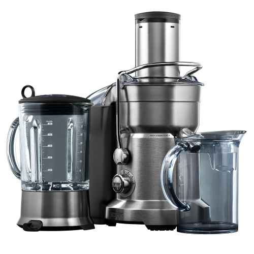Технические характеристики
Мощность: 1800 Вт
Скорость отжима: 6500-13000 об/мин
Количество скоростей отжима: 5
Количество режимов в блендере: 8
Габариты со стаканом (ДxШxВ): 25x35x40 см
Вес: 9.28 кг
Длина электрического кабеля: 1 м
Объем стакана для сока: 1200 мл
Объем контейнера для жмыха: 3500 мл
Объем чаши блендера: 1500 мл
Материал корпуса: нержавеющая сталь
Диаметр загрузочного желоба: 84 мм
Срок гарантии: 1 год
Высокая мощность 1800 Вт.
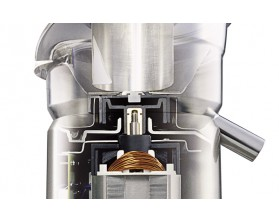Двигатель мощностью 1800 Вт обеспечивает бесперебойную работу каждого из двух приборов в конструкции модели: соковыжимателя и блендера.
Профессиональный переключатель скоростей
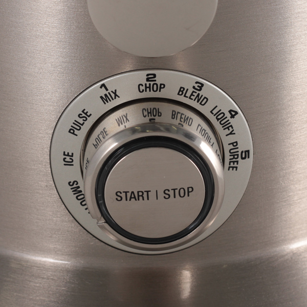НАЛИЧИЕ 5 СКОРОСТЕЙ ПОЗВОЛЯЕТ ТОЧНО ПОДОБРАТЬ ОПТИМАЛЬНУЮ СКОРОСТЬ ОТЖИМА ДЛЯ ТВЕРДЫХ И МЯГКИХ ПРОДУКТОВ.
Широкий загрузочный желоб 84 мм
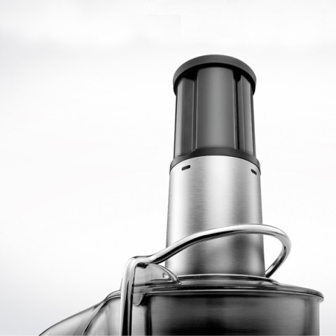Максимально удобное приготовление соков
ДИАМЕТР ЗАГРУЗОЧНОГО ЖЕЛОБА ПОЗВОЛЯЕТ ЗАГРУЖАТЬ ПРОДУКТЫ ЦЕЛИКОМ, НЕ РАЗРЕЗАЯ ИХ НА ЧАСТИ, ЧТО СПОСОБСТВУЕТ ПОЛУЧЕНИЮ БОЛЬШЕГО КОЛИЧЕСТВА СОКА ЗА МЕНЬШЕЕ ВРЕМЯ.
Количество оборотов соковыжималки:
- 1 скорость вращения 6.500 об/мин
- 2 скорость вращения 8.000 об/мин
- 3 скорость вращения 9.800 об/мин
- 4 скорость вращения 11.000 об/мин
- 5 скорость вращения 13.000 об/мин
ПРОФЕССИОНАЛЬНЫЙ ДВИГАТЕЛЬ МОЩНОСТЬЮ 1800 ВТ ПОЗВОЛЯЕТ УДЕРЖИВАТЬ ЗАДАННЫЕ ОБОРОТЫ В ДИАПАЗОНЕ ОТ 6500 ДО 13000 В МИНУТУ ПРИ ЛЮБЫХ НАГРУЗКАХ, ДЛЯ ПОЛУЧЕНИЯ МАКСИМАЛЬНОГО КОЛИЧЕСТВА СОКА, И ДЛЯ КАЧЕСТВЕННОГО ИЗМЕЛЬЧЕНИЯ ПРОДУКТОВ И ЛЬДА.
Плавный запуск двигателя
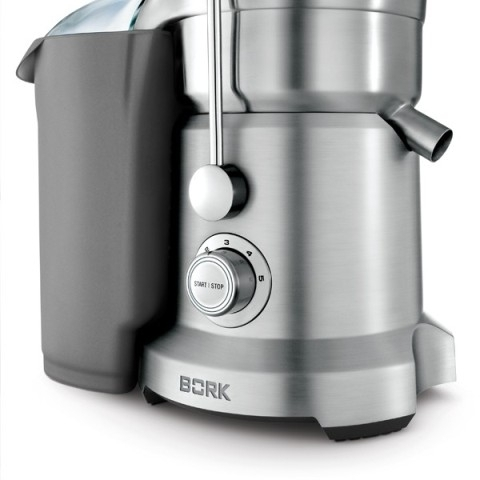Механизм плавного запуска асинхронных моторов (софтстартер) - это устройство, которое существенно повышает срок службы электродвигателя, работающего от вала данного мотора. При подаче напряжения питания простым методом, происходят процессы, рушащие электро-двигатель.
Пусковой ток и напряжение на обмотках моторов, в момент запуска, существенно превосходят возможные значения. Что и ведет к повреждению изоляции обмоток, «сгоранию» контактов, существенно уменьшается срок эксплуатации подшипников мотора.
Все соковыжимаматели BORK имеют плавный запуск двигателя
P.S. Покупателю, можно показать отсутствие данной функции поставив соковыжималку на лист бумаги и включив ее. Она развернется. Если данная функция присутствует, то аппарат останется на месте. Именно в соковыжималках без плавного запуска используются присоски на днище корпуса.
Микроячеястый фильтр BORK
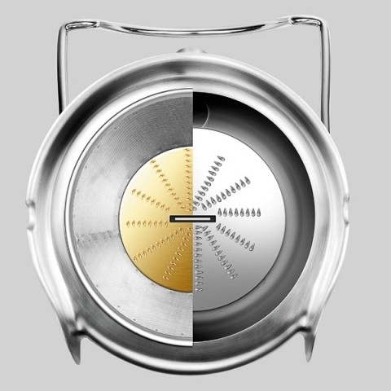СОК ПОЛУЧАЕТСЯ ЧИСТЫМ, А ЖМЫХ СУХИМ БЛАГОДАРЯ МЕЛКОЯЧЕИСТОМУ ФИЛЬТРУ ВЫПОЛНЕННОМУ ПО ТЕХНОЛОГИИ ЛАЗЕРНОЙ ПЕРФОРАЦИИ И ОБЛАДАЮЩЕМУ НЕПРЕВЗОЙДЕННОЙ СТЕПЕНЬЮ ФИЛЬТРАЦИИ. НИТРИД-ТИТАНОВОЕ ПОКРЫТИЕ ДЕЛАЕТ НОЖИ УСТОЙЧИВЫМИ К ИЗНОСУ, ОКИСЛЕНИЮ И КОРРОЗИИ.
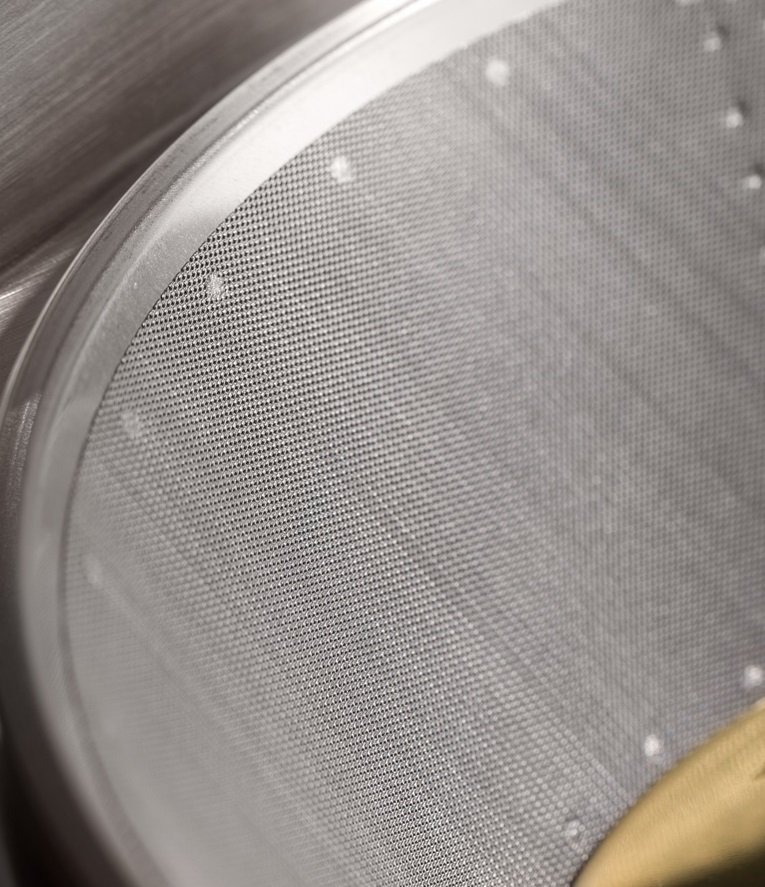 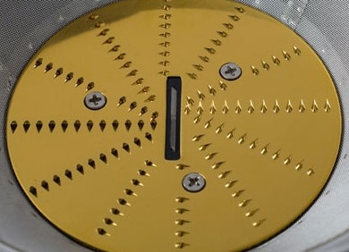Покрытие из нитрида титана
Нитрид титана — бинарное химическое соединение титана с азотом.
Нитрид титана представляет собой порошок желто-коричневого цвета, а в компактном состоянии приобретает золотистую окраску.
Особенности нержавеющей стали, покрытой нитридом титана:
- - Экологическая чистота используемых материалов
- - Устойчивость к окислению при температурах 700-800 °С
- - Высокая износостойкость, даже под воздействием жестких частиц природного происхождения
- - Устойчивость к агрессивным средам, даже к кипящим кислотам, к примеру: температура кипения серной кислоты 338 °С
- - Повышенная стойкость к коррозии: устойчивость в условиях повышенной влажности
Нитрид титана используется для создания износостойких покрытий.
В медицине при создании эндопротезов (искусственных костей и суставов), и зубных протезов. В быту, как стойкое защитное или декоративное покрытие столовых приборов.
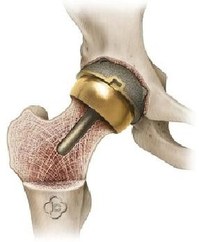 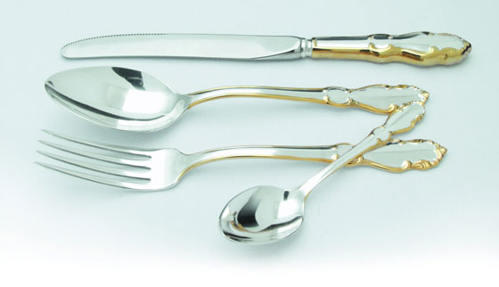 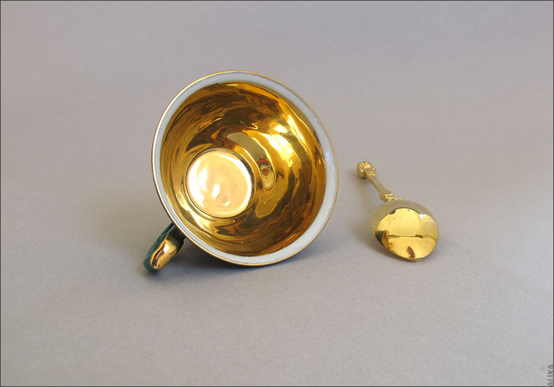Стойкость покрытия
Нитрид титана является одним из наиболее изученных и часто используемых тонкопленочных покрытий во всем мире.
С высокой твердостью ~85 HRC и толщиной всего 3 микрона, это покрытие повышает износостойкость режущих кромок, препятствует появлению царапин, а также уменьшает коэффициент трения на поверхности.
Срок эксплуатации в промышленных условиях достигает 50 лет.
Лучшие ножи, сделанные в Японии, в соответствии с многовековыми традициями изготовления холодного оружия, имеют твёрдость 50 - 70 по Роквеллу.
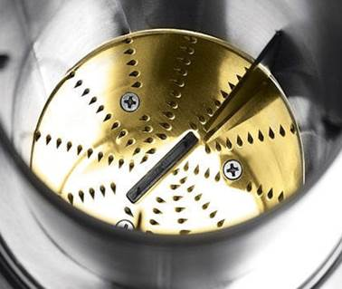Твёрдость 85 НRС.
Фиксация крышки соковыжималки
В соковыжимателях BORK удобная и надежная конструкция.
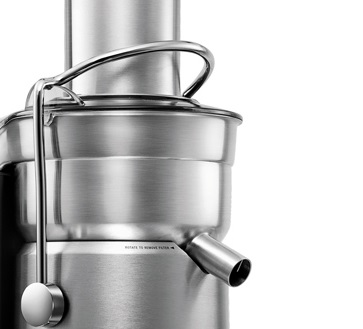Зажимы, фиксирующие верхнюю крышку, выполнены из металла. У человека использующего соковыжималку достаточно часто, металлическое крепление вызывает доверие, такое устройство более надежное и практичное.
Защита двигателя от перегрузки
В области вентилятора установлен термостат, также предохранитель располагается снизу моторной части. При чрезмерной загрузке автоматически активируется функция защиты от перегрузки и соковыжималка отключается. Если это произошло необходимо дать прибору остыть, после чего нажать кнопку «overload protection». Защита от перегрузки будет восстановлена.
Блендер
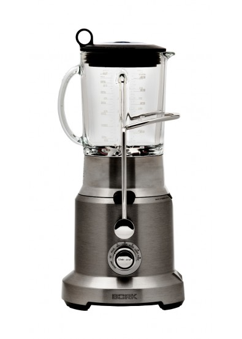Количество оборотов блендера:
- 1 скорость вращения 4.200 об/мин
- 2 скорость вращения 5.500 об/мин
- 3 скорость вращения 7.000 об/мин
- 4 скорость вращения 8.500 об/мин
- 5 скорость вращения 10.000 об/мин
Блендер с 8 автоматическими программами работы
Блендер в составе модели имеет 8 автоматических программ: 5 скоростей, приготовление смузи, дробление льда, а также программа интенсивной обработки.
Система смешивания KINETIX
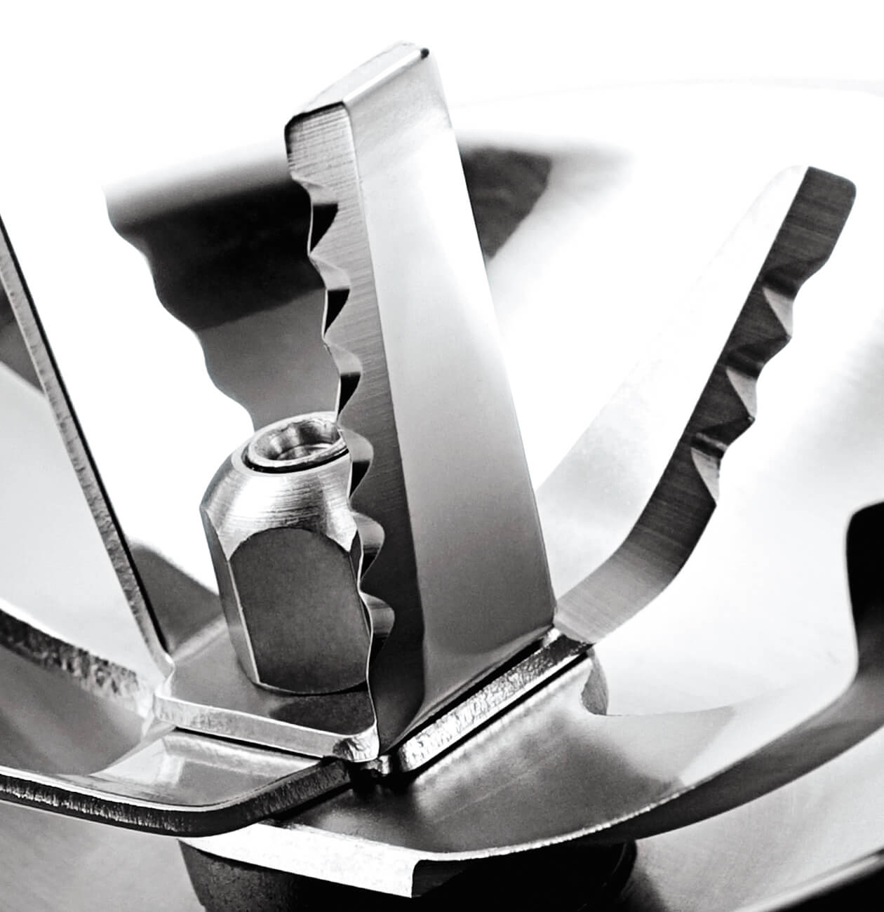СИСТЕМА РАСПОЛОЖЕНИЯ ШЕСТИ НОЖЕЙ РАЗНОЙ ФОРМЫ ИСКЛЮЧАЕТ ПОЯВЛЕНИЕ «ПУСТЫХ ЗОН», ОБЕСПЕЧИВАЯ ИЗМЕЛЬЧЕНИЕ И ПЕРЕМЕШИВАНИЕ ПРОДУКТА ПО ВСЕМУ ОБЪЕМУ ЧАШИ. СВЕРХПРОЧНЫЕ И ДОЛГОВЕЧНЫЕ НОЖИ ИЗ ЛЕГИРОВАННОЙ СТАЛИ ГАРАНТИРУЮТ ИСКЛЮЧИТЕЛЬНЫЙ РЕЗУЛЬТАТ. Благодаря тому что узел ножей съемный, его легко мыть.
Стеклянная чаша
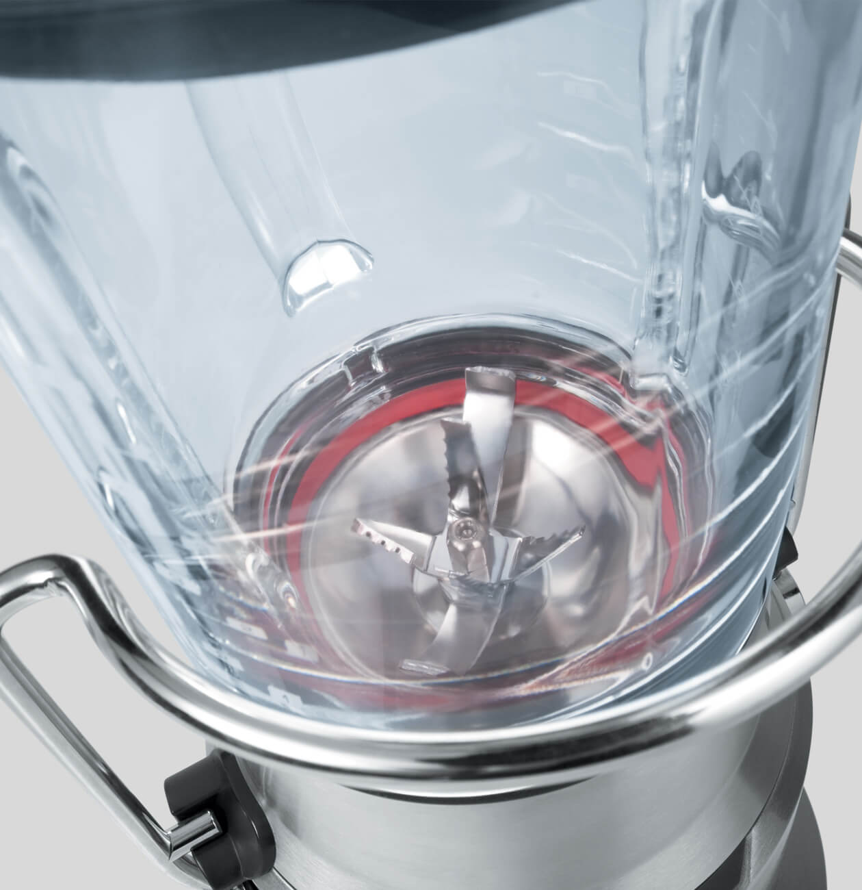СТЕКЛО ЧАШИ БЛЕНДЕРА НЕ ВПИТЫВАЕТ СОКИ ПРОДУКТОВ, ЗАПАХИ, КРАСИТЕЛИ. СО ВРЕМЕНЕМ НЕ МУТНЕЕТ И НЕ ЦАРАПАЕТСЯ. ЧАША ПОДХОДИТ ДЛЯ МЫТЬЯ В ПОСУДОМОЕЧНОЙ МАШИНЕ.
Особенности
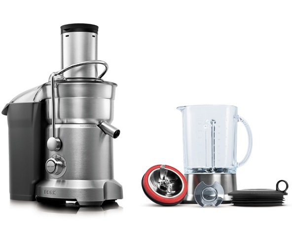- Плавный пуск двигателя
- Электронная защита от перегрузки
- Микроячеистый фильтр
- Ножи с нитрид-титановым покрытием
- Профессиональный переключатель скоростей
- Система ножей KINETIX
- Принудительное охлаждение двигателя
- Идеально сбалансированный двигатель
- Режим ожидания. Включается после 2-х минут бездействия соковыжималки